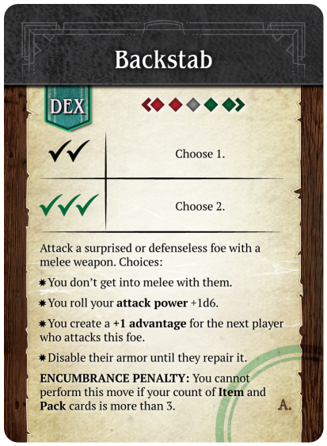
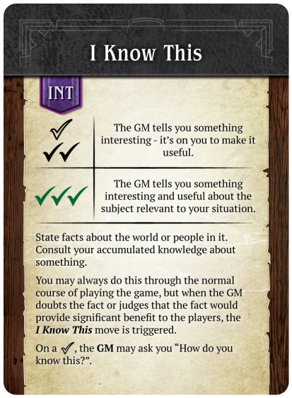
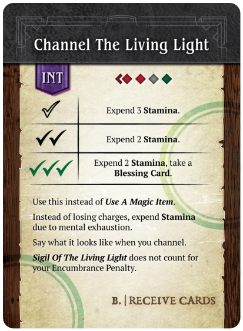

In this clip Kazul (Alex) tries to sneak up behind the lizard priest and
perform Backstab. Alex's character hasn't learned the Backstab move yet,
but they're allowed to try it at the "wild" level by flipping 3 cards
and taking the worst result.

I know this
In this clip, the table discusses possible options for the "Yoshi" PC
Abigale (Mel), who has lost their sword, and decides they want to get it
back, even if they must resort to unconventional means.

Channel The Living Light
In this clip, Pronce (Michael) triggers Channel The Living Light, to use
his magic item, Sling of Unerring Dispatch. After a successful hit, the
GM and Michael team up to describe the result.

Examples of play
Start Script
This is the Start Script (version as of May 10, 2018, when the working
title was still "Deckahedron World") that begins a session for players
that have never played before.
Full Session
A full session of play (version as of May 10, 2018, when the working
title was still "Deckahedron World") where the players have never
played a role-playing game before.
Contribute your own
If you would like to contribute to the examples of play — either text
or video — you can
send me an email.